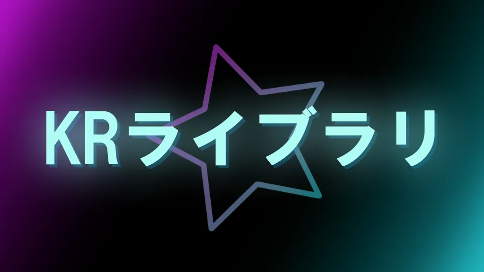
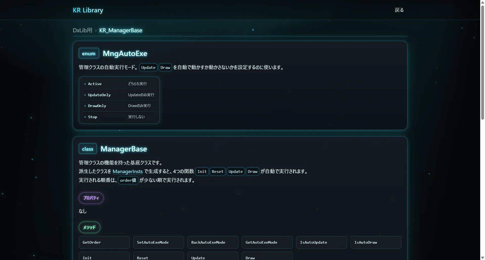

「導入するだけですぐ使える」
汎用データ型・リソース管理・自動実行管理などを備えた自作ライブラリです。
KRライブラリ

| 開発期間 | 2024/12/12 ~ 現在 |
| 開発人数 | 1人 |
| 使用技術 |
目的
- ゲーム開発で再利用できる汎用処理をライブラリ化し、開発効率の向上を図る。
- 保守性・拡張性・可用性を意識した設計力を身につける。
担当
- 個人制作のため、設計・実装を含め全て担当。
リンク
リファレンス
現在、使用例やクラス・関数の情報をまとめたリファレンスサイトを制作中です。
GitHubにソースコードを公開していますので、あわせてご覧ください。


KRライブラリ リファレンスサイト
https://krlib-reference.netlify.app/
テンプレート
プログラム開始時のテンプレートです。
管理クラスとオブジェクトを用いた構成で設計します。
/*
- main.cpp - (KrLib_Dx用)
ver.2026/10/14
プログラムの開始テンプレ.
*/
#include "KrLib_Dx/KR_Global.h"
#include "KrLib_Dx/KR_App.h"
#include "KrLib_Dx/KR_Debug.h"
#include "KrLib_Dx/KR_Input.h"
#include "KrLib_Dx/KR_Object.h"
#include "KrLib_Dx/KR_ObjectList.h"
#include "KrLib_Dx/KR_ManagerBase.h"
#include "KrLib_Dx/KR_ManagerInsts.h"
#include "KrLib_Dx/KR_SceneMng.h"
#include "KrLib_Dx/KR_Sound.h"
#include "KrLib_Dx/KR_TimerMng.h"
using namespace KR;
/*
[オブジェクト]
ObjectCirやObjectBoxを継承することを推奨.
ObjectListで管理することで、配列でのオブジェクト管理がしやすくなる.
*/
class Object : public ObjectCir
{
private:
public:
//初期化.
void Init() override {
}
//更新.
void Update() override {
Debug::Log(_T("test"));
}
//描画.
void Draw() override {
}
//消滅条件(必要なら設定)
bool IsErase() const override {
return false;
}
};
/*
[管理クラス]
必ずManagerBaseを継承する.
ManagerInstsにこのクラスを登録することで、自動実行されるようになる.
*/
class GameManager : public ManagerBase
{
private:
ObjectList<Object> objects;
public:
//コンストラクタ.
GameManager(){}
//初期化.
void Init() override {
//オブジェクト生成.
objects.NewObject();
}
//リセット.
void Reset() override {
}
//更新.
void Update() override {
//オブジェクト更新.
objects.Update();
}
//描画.
void Draw() override {
//オブジェクト描画.
objects.Draw();
}
};
int WINAPI WinMain(
_In_ HINSTANCE hinstance,
_In_opt_ HINSTANCE hPrevinstance,
_In_ LPSTR lpCmdLine,
_In_ int nCmdShow
){
/*
[管理クラス生成]
生成した順にInitやUpdateなどが自動で実行される.
*/
//KrLibに実装されている管理クラスを登録.
ManagerInsts::NewManager<InputMng>();
ManagerInsts::NewManager<SoundMng>();
ManagerInsts::NewManager<SceneMng>();
ManagerInsts::NewManager<TimerMng>();
//それ以外の管理クラスを登録.
ManagerInsts::NewManager<GameManager>();
//初期化処理.
App::InitDx(800, 640, true, 60, false);
//ループ処理.
App::LoopDx();
return 0;
}
実用例
動画
KRライブラリの実用例として作成したテストプログラムです。
ソースコード
/*
地面の上で三角形を回転させるプログラム.
KRライブラリ ver.2026/10/15
*/
#include "KrLib_Dx/KR_Global.h"
#include "KrLib_Dx/KR_App.h"
#include "KrLib_Dx/KR_Debug.h"
#include "KrLib_Dx/KR_Input.h"
#include "KrLib_Dx/KR_Object.h"
#include "KrLib_Dx/KR_ObjectList.h"
#include "KrLib_Dx/KR_ManagerBase.h"
#include "KrLib_Dx/KR_ManagerInsts.h"
#include "KrLib_Dx/KR_SceneMng.h"
#include "KrLib_Dx/KR_Sound.h"
#include "KrLib_Dx/KR_TimerMng.h"
#include "KrLib_cpp/KR_Calc.h"
using namespace KR;
constexpr int PLAYER_BALL_COUNT = 3; //プレイヤーの球がいくつあるか.
constexpr double PLAYER_BALL_ROT_SPEED_MAX = 10; //球の最大回転速度.
constexpr double PLAYER_BALL_ROT_SPEED_ADD = 0.25; //球の回転加速度.
constexpr double PLAYER_BALL_DIST = 60; //中心から球までの距離.
//地面.
class Ground : public ObjectBox
{
private:
public:
//初期化.
void Init() override {
GetBox()->pos = { 0, 100 };
GetBox()->size = { 800, 10 };
}
//更新.
void Update() override {
}
//描画.
void Draw() override {
DrawShape();
}
};
//プレイヤーを構成する球.
class PlayerBall : public ObjectPoint
{
private:
bool isGround; //この球が接地しているか.
public:
//コンストラクタ.
PlayerBall() :
isGround(false)
{
SetDrawR(10);
SetDrawColor(ColorID::Cyan);
}
//set.
void SetIsGround(bool flag) { isGround = flag; }
//get.
bool GetIsGround() const { return isGround; }
//初期化.
void Init() override {
}
//更新.
void Update() override {
//接地した球を色で分ける.
SetDrawColor(isGround ? ColorID::Cyan : ColorID::SkyBlue);
}
//描画.
void Draw() override {
DrawShape();
}
};
//プレイヤー本体.
class Player : public ObjectPoint
{
private:
vector<PlayerBall> balls;
double rotSpeed{}; //球の回転速度.
public:
//回転力を与える.
void AddRotInput(double input) {
//回転.
rotSpeed += input * PLAYER_BALL_ROT_SPEED_ADD;
//速度限界.
NumLimRange(&rotSpeed, -PLAYER_BALL_ROT_SPEED_MAX, PLAYER_BALL_ROT_SPEED_MAX);
}
//初期化.
void Init() override {
//初期位置.
SetPos({0, 50});
//球の数を設定.
balls.resize(PLAYER_BALL_COUNT);
//球の位置を設定.
double ang = -90;
for (auto& i : balls) {
//球を配置する座標.
const DBL_XY pos = GetPos() + Calc::AngToVector(ang) * PLAYER_BALL_DIST;
i.SetPos(pos);
//均等な角度で配置.
ang += 360 / PLAYER_BALL_COUNT;
}
//球の初期化.
for (auto& i : balls) {
i.Init();
}
}
//更新.
void Update() override {
//回転.
RotBall();
//球の更新.
for (auto& i : balls) {
i.Update();
}
//速度減衰.
rotSpeed *= 0.97;
}
//描画.
void Draw() override {
//三角形の線を描画.
Line line[3] = {
{balls[0].GetPos(), balls[1].GetPos(), ColorID::SkyBlue, 1},
{balls[1].GetPos(), balls[2].GetPos(), ColorID::SkyBlue, 1},
{balls[2].GetPos(), balls[0].GetPos(), ColorID::SkyBlue, 1}
};
for (auto& i : line) {
i.Draw(true);
}
//球の描画.
for (auto& i : balls) {
i.Draw();
}
}
//球回転.
void RotBall();
};
//ゲーム管理.
class GameManager : public ManagerBase
{
private:
Ground ground; //地面.
Player player; //プレイヤー.
public:
//コンストラクタ.
GameManager(){}
//get.
Ground* GetGround() { return &ground; }
//初期化.
void Init() override {
ground.Init();
player.Init();
}
//リセット.
void Reset() override {
}
//更新.
void Update() override {
const auto inputMng = ManagerInsts::Get<InputMng>();
//Aキー.
if (inputMng->IsPushKey(KeyID::A)) {
player.AddRotInput(-1.0); //回転.
}
//Dキー.
if (inputMng->IsPushKey(KeyID::D)) {
player.AddRotInput(1.0); //回転.
}
ground.Update();
player.Update();
}
//描画.
void Draw() override {
ground.Draw();
player.Draw();
}
};
//球回転.
void Player::RotBall() {
//地面の当たり判定.
Box* boxGround = ManagerInsts::Get<GameManager>()->GetGround()->GetBox();
//地面に埋まった距離.
double buriedDist = 0;
//地面の上面座標.
const double groundY = boxGround->pos.y - boxGround->size.y / 2;
//基準点.
const DBL_XY pivotPos = GetPos();
for (auto& i : balls) {
//接地した球は処理しない.
if (i.GetIsGround()) { continue; }
//角度と距離.
const double ang = Calc::FacingAng(pivotPos, i.GetPos());
const double dist = Calc::Dist(pivotPos, i.GetPos());
//回転した位置を計算.
const DBL_XY newPos = pivotPos + Calc::AngToVector(ang + rotSpeed) * dist;
//位置設定.
i.SetPos(newPos);
}
for (auto& i : balls) {
//接地済の球と、接地してない球は処理しない.
if (i.GetIsGround() || !i.HitCheckBox(*boxGround)) { continue; }
//球の座標.
const double ballY = i.GetPos().y;
//接地点.
const DBL_XY groundPos = { i.GetPos().x, groundY };
//地面Yとの差.
const double buriedDist = (ballY - groundY);
//埋まった分平行移動させる.
for (auto& j : balls) {
j.AddPos({ 0, -buriedDist });
j.SetIsGround(false);
}
//新たな接地オブジェクト.
i.SetIsGround(true);
//接地点を回転軸とする.
SetPos(groundPos);
break;
}
}
int WINAPI WinMain(
_In_ HINSTANCE hinstance,
_In_opt_ HINSTANCE hPrevinstance,
_In_ LPSTR lpCmdLine,
_In_ int nCmdShow
){
/*
[管理クラス生成]
生成した順にInitやUpdateなどが自動で実行される.
*/
//KrLibに実装されている管理クラスを登録.
ManagerInsts::NewManager<InputMng>();
ManagerInsts::NewManager<SoundMng>();
ManagerInsts::NewManager<SceneMng>();
ManagerInsts::NewManager<TimerMng>();
//それ以外の管理クラスを登録.
ManagerInsts::NewManager<GameManager>();
//初期化処理.
App::InitDx(800, 640, true, 60, false);
//ループ処理.
App::LoopDx();
return 0;
}
こだわりポイント
考える手間を減らす設計
ライブラリのほとんどの機能は、必要な設定を行うだけで利用できるよう設計し、手間のかかる処理を自動化しています。
例えば、ManagerBaseクラスを継承した管理クラスは
ManagerInsts::NewManager() で生成するだけで Update() や Draw() が自動で呼び出されます。